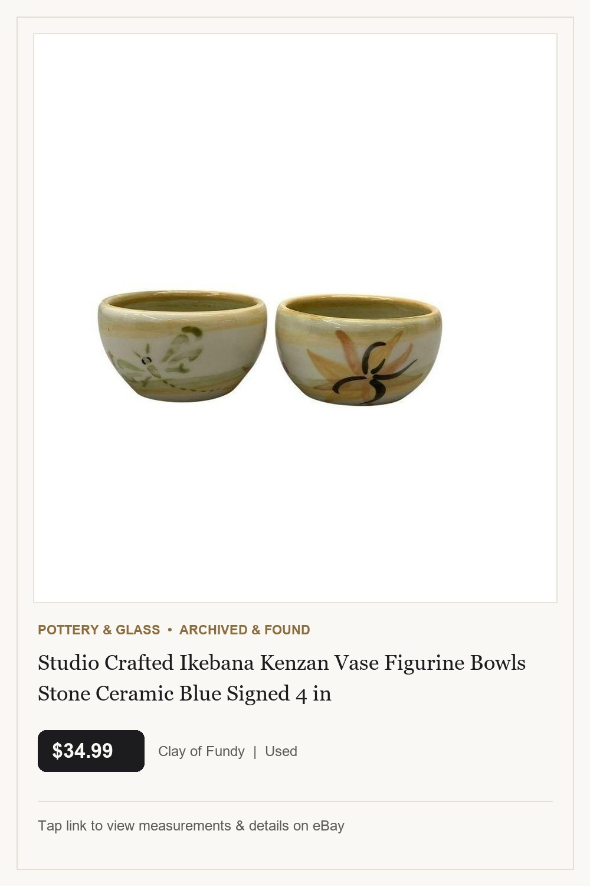

Studio Crafted Ikebana Kenzan Vase Figurine Bowls Stone Ceramic Blue Signed 4 in
$34.99
Studio Crafted Ikebana Kenzan Vase Figurine Bowls Stone Ceramic Blue Signed 4 in. Brand: Clay of Fundy • Condition: Used • Size: 4 in • Color: Multicolor • Listed at $34.99. Available via archivedandfound on eBay. #VintageHomeDecor #ArtGlass #Pottery